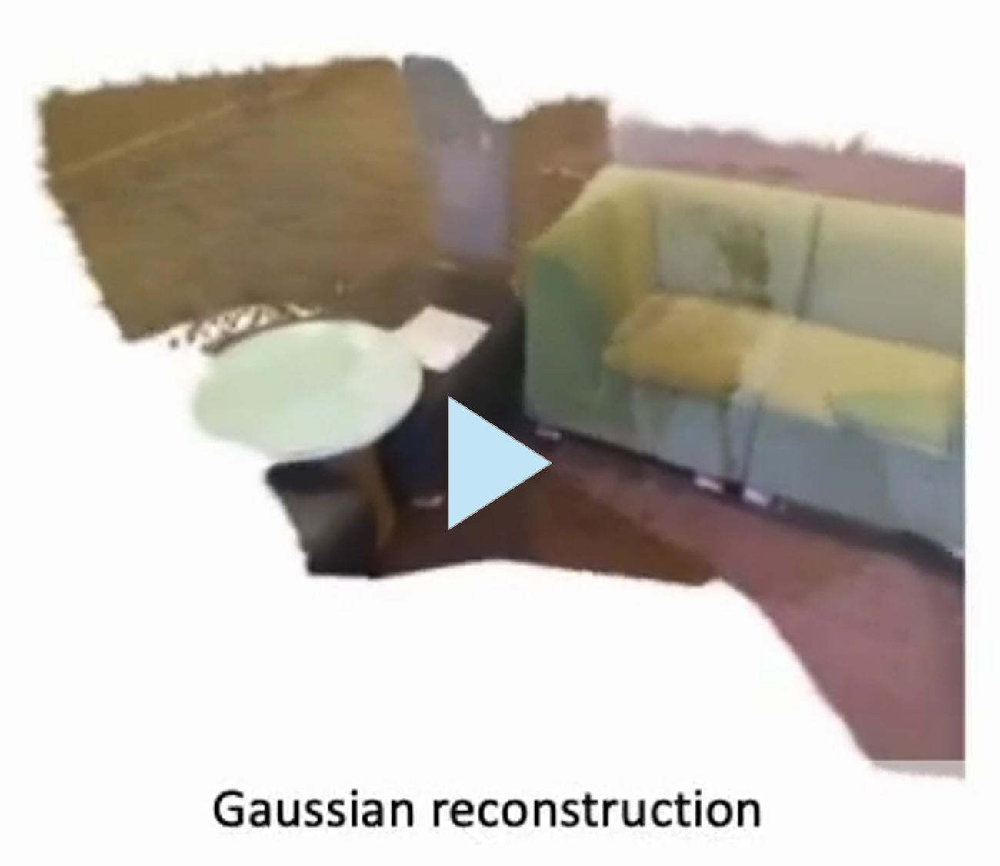
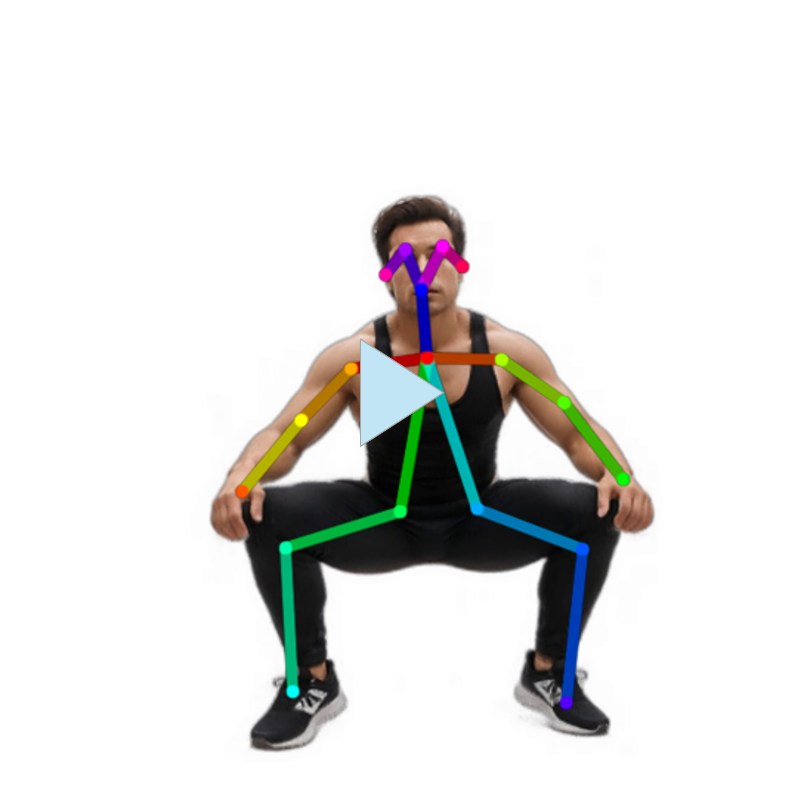

Publications

|
Shiu-hong Kao, Yu-Wing Tai, Chi-Keung Tang ArXiv 2025 [arXiv] [Project page] We propose CoT-RVS to extract the temporal-semantic correlation in videos with chain of thoughts and achieve the state-of-the-art performance for reasoning video segmentation. |
 |
Shiu-hong Kao, Yu-Wing Tai, Chi-Keung Tang Arxiv preprint 2025. [arXiv] [Project page] We propose ThinkFirst, a novel Chain-of-Thought (CoT) reasoning segmentation framework that generates an accurate object mask given a text prompt. ThinkFirst can handle difficult scenarios such as implicit queries, camouflaged objects, out-of-domain objects with easy control. |

|
Shiu-hong Kao, Xiao Li, Jinglu Wang, Yang Li, Chi-Keung Tang, Yu-Wing Tai, Yan Lu Arxiv preprint 2025. [arXiv] [Demo] We introduce UVRM, a novel 3D reconstruction model capable of being trained and evaluated on 360-degree monocular videos without requiring any information about the pose. |

|
Yang Li, Jinglu Wang, Lei Chu, Xiao Li, Shiu-hong Kao, Yingcong Chen, Yan Lu International Conference on Computer Vision (ICCV), 2025 [arXiv] We propose StreamGS, an online generalizable 3DGS reconstruction method for unposed image streams, which progressively transform image streams to 3D Gaussian streams by predicting and aggregating per-frame Gaussians. |
|
|
Chia-Hong Hsu, Shiu-hong Kao, Randall Balestriero Arxiv preprint 2025. [arXiv] [Project page] We propose invertible Guided Consistency Training (iGCT), a data-driven training framework for guided consistency model, contributing to fast and guided image generation and editing without requiring the training and distillation of any diffusion models. |

|
Shiu-hong Kao, Xinhang Liu, Yu-Wing Tai, Chi-Keung Tang Arxiv preprint 2024. [arXiv] We propose InceptionHuman, a NeRF-based generative framework incorporating state-of-the-art diffusion models, which receives any types and any sizes of prompts, (e.g. text, pose, style) to generate realistic 3D human. |

|
Xinhang Liu, Jiaben Chen, Shiu-hong Kao, Yu-Wing Tai, Chi-Keung Tang European Conference on Computer Vision (ECCV), 2024 [arXiv] [Project page] We introduce Deceptive-NeRF/3DGS, a new method for enhancing the quality of reconstructed NeRF/3DGS models using synthetically generated pseudo-observations, capable of handling sparse input and removing floater artifacts. |
 |
Shiu-hong Kao*, Jierun Chen*, S.-H. Gary Chan Arxiv preprint 2023. [arXiv] [Code] We reveal the issue of Inter-block Optimization Entanglement (IBOE) in end-to-end KD training and further propose StableKD to stablilize optimization. Extensive experiments show StableKD achieve high accuracy, fast convergence, and high data efficiency. |
 |
Jierun Chen, Shiu-hong Kao, Hao He, Weipeng Zhuo, Song Wen, Chul-Ho Lee, S.-H. Gary Chan IEEE/CVF Conference on Computer Vision and Pattern Recognition (CVPR), 2023 [Paper] [Code] We propose a simple yet fast and effective partial convolution (PConv), as well as a latency-efficient family of network architectures called FasterNet. |
Projects
-
Dynamic Neural Network Comparison: Efficiency and Performance
Shiu-hong Kao, Jierun Chen, S.-H. Gary Chan
Undergraduate Research Opportunities Program, Fall 2021, HKUST
[pdf]
We test, analyze, and compare the performance and efficiency across different deep learning models.
-
Press Release Classification on Mobile Application
Shiu-hong Kao, Dimitris Chatzopoulos
Undergraduate Research Opportunities Program, Spring 2021, HKUST
[pdf]
We develop a text-classifying AI model compact with memory-limited mobile devices.
-
AlignKD: A Low-cost Technique for Convolutional Shortcut Removal
Shiu-hong Kao, Bo-rong Lai
Course project for COMP4471 Deep Learning in Computer Vision, HKUST
[pdf]
AlignKD is a cheap method to remove shortcuts in convolutional neural networks while preserving the performance.